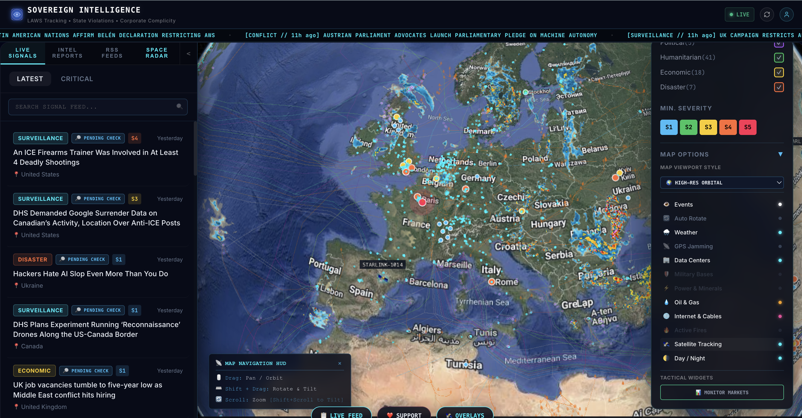

Bypass mainstream media latencies. Sovereign Intel feeds direct, verified geolocated signals of conflict, electronic warfare, maritime disruptions, and resource anomalies—built for corporate risk, security analysts, and logistics commanders who demand real-time telemetry.
Traditional risk indexes and corporate briefings are built on static digests, lagging news networks, and regional political filters. Sovereign Intel exposes critical realities in real time.
Mainstream news networks and institutional portals can take hours—sometimes days—to vet and publish alerts on border developments, blockades, or maritime disruptions. By then, logistics assets are already stranded.
Many commercial threat maps editorialize raw reports to protect regional diplomatic alliances or sovereign investments. Critical local signals are diluted, leading to blindspots in supply chains.
Electronic warfare is active and growing. State actors jam and spoof GPS signals, rendering standard transponders and tracking maps blind over high-friction air corridors and maritime routes.
Six intelligence layers. One terminal. Sovereign Dash surfaces what matters — before it reaches the wire.
Real-time escalation signals from disputed zones, border incidents, and military mobilisation events — graded S1 through S5.
Monitor biometric deployment, digital surveillance expansions, and SIGINT intercepts across state and corporate actors.
Seismic events, climate disasters, and humanitarian crises pinpointed with satellite verification and live severity scoring.
Supply chain flags, sanctions intelligence, forced-labour risk markers, and critical minerals disruption — globally indexed.
Active satellite tracking across LEO and MEO orbits. Live telemetry from ORION, HELIX, and SENTINEL constellations.
Deep-dive structured reports on corporate complicity, state actor behaviour, and geopolitical risk — exportable and shareable.
Toggle any intelligence layer directly on the live map. Click a layer to explore what it reveals.
Signals streaming through Sovereign Dash in real time.
Everything you need — feed, globe, overlays, satellite radar — in a single ultra-wide command interface.

For international networks, global logistics conglomerates, and private intelligence command units. We engineer completely specialized, hosted visualizer platforms and proprietary analytics suites built to your strategic criteria.
Deploy a custom instance of Sovereign's spatial engine, customized with proprietary data layers, specialized asset geofences, and closed-circuit operational telemetry.
Send a message to our solutions team. Briefly describe your mapping, threat alerts, or visual analytics needs, and we will follow up with a proposal within 24 hours.